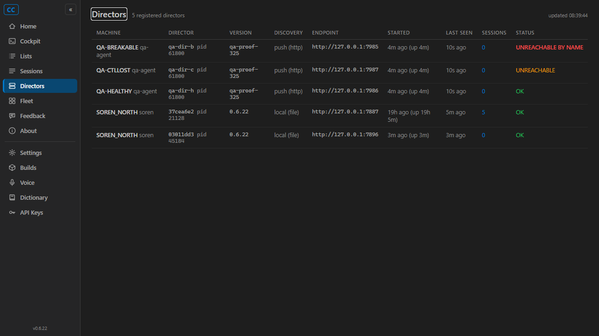

Issue: [Gateway] Re-verify each Director's advertised endpoint every heartbeat cycle - flag unreachable-by-name within 30 s
PR: #338 (branch issue-325-gateway-endpoint-reverify, head d0c128f)
QA Agent run: 2026-06-11, independent of the Developer Agent's proof run.
Method: Own worktree checkout of the PR branch; own solution build; own isolated QA Gateway
(CC_GATEWAY_NO_TAILSCALE=1 CC_TURNBRIEFS=0, port 7975 - confirmed running the PR head:
/healthz reported 0.6.22+d0c128f...); own driver/listener harness
(qa-harness/, written by QA, not a re-run of the Developer's harness); own Cockpit instance
(port 7995) against the QA Gateway; plus a real slot-6 Director built from the PR branch and launched via
scripts/agent-session-isolation.ps1 (per-session isolation, never the user's production processes).
The production Gateway and Tailscale serve table were never touched; the SORENLAPTOP serve-mapping break in the
AC wording was exercised as the isolated-equivalent endpoint break, the same substitution the issue's proof
target documents (the state machine under test is identical; only the failure string differs).
| # | Criterion | Expected | Actual (QA-measured) | Evidence | Verdict |
|---|---|---|---|---|---|
| 1 | Break the advertised endpoint of a test Director while its heartbeats continue: within 2 heartbeat cycles (30 s) GET /directors marks it unreachable-by-name via a named field/state |
Named state appears within 30 s; heartbeats keep flowing the whole time | PASS - listener killed 12:35:01.272Z, advertisedEndpointState="unreachable-by-name" observed 12:35:18.357Z = 17.1 s. Heartbeat counter went 0 -> 3 during the flagged window while the state stayed flagged (Director never swept = alive-but-name-dead, explicitly distinct from heartbeat loss). Named fields on the wire: advertisedEndpointState / advertisedEndpointUnreachableSince / advertisedEndpointError / advertisedEndpointCheckedAt. |
qa-timeline.txt lines 7-12 | PASS |
| 2 | Restore the mapping: the state auto-clears within 2 cycles, no restart of either side | Back to ok within 30 s, Gateway and Director untouched |
PASS - listener relaunched 12:35:29.364Z, state back to ok (since/error nulled) at 12:35:31.371Z = 2.0 s. No process restarts. Re-verified a second time after the impostor phase (CLEARED-AFTER-IMPOSTOR). |
qa-timeline.txt lines 13-17, 24-25 | PASS |
| 3 | Unreachable-by-name visibly distinct from healthy and from heartbeat-lost on the Cockpit fleet/directors page | Three visually different renderings | PASS - QA screenshot shows, side by side: red bold UNREACHABLE BY NAME (QA-BREAKABLE), amber UNREACHABLE (QA-CTLLOST, fan-out/control-plane failure with healthz fine), green OK (QA-HEALTHY and the two real Directors). Heartbeat-lost remains the existing distinct behavior (entry swept from the list at 60 s / stale LAST SEEN). Tooltip read off the live DOM: "Director is alive (heartbeating) but its advertised endpoint stopped answering (3m ago): healthz probe timed out after 2s at http://127.0.0.1:7985/healthz". |
qa-cockpit-directors.png | PASS |
| 4 | Unit tests for the probe state machine: healthy -> fail -> flagged; flagged -> succeed -> cleared; directorId mismatch counts as failure (impostor guard) | Tests exist and pass | PASS - AdvertisedEndpointMonitorTests: 8/8 green in QA's own build, covering exactly the three required transitions plus missing-directorId, FSW-local skip, #324-flagged skip, failure-without-reason throws, and re-register reset. QA additionally exercised the impostor guard LIVE: a wrong-id listener at the advertised endpoint was flagged with "healthz answered ... but as a DIFFERENT Director (qa-impostor-process) - the advertised URL points at the wrong process" (timeline lines 18-22). |
dotnet test output; qa-timeline.txt lines 18-22 | PASS |
| 5 | Probe failures are logged Gateway-side with endpoint + reason | Log lines carry endpoint and reason | PASS - QA Gateway log (director-2026-06-11-31912.log) excerpt below: transition lines carry endpoint= and reason=, recovery logged, repeat-throttled (transition + every 10th). |
Log excerpt below | PASS |

2026-06-11 08:34:31.036 [AdvertisedEndpointMonitor] Start: probing advertised endpoints every 15s 2026-06-11 08:35:18.065 [DirectorRegistry] qa-dir-breakable advertised endpoint UNREACHABLE-BY-NAME (still heartbeating): endpoint=http://127.0.0.1:7985, failures=1, reason=healthz probe timed out after 2s at http://127.0.0.1:7985/healthz 2026-06-11 08:35:31.046 [DirectorRegistry] qa-dir-breakable advertised endpoint REACHABLE again: endpoint=http://127.0.0.1:7985 2026-06-11 08:35:46.050 [DirectorRegistry] qa-dir-breakable advertised endpoint UNREACHABLE-BY-NAME (still heartbeating): endpoint=http://127.0.0.1:7985, failures=1, reason=healthz answered at http://127.0.0.1:7985, but as a DIFFERENT Director (qa-impostor-process) - the advertised URL points at the wrong process 2026-06-11 08:36:01.055 [DirectorRegistry] qa-dir-breakable advertised endpoint REACHABLE again: endpoint=http://127.0.0.1:7985
qa-dir-breakable: advertisedEndpointState="unreachable-by-name", unreachableSince=2026-06-11T12:36:18.05Z,
error="healthz probe timed out after 2s at http://127.0.0.1:7985/healthz", checkedAt stamped each cycle
qa-dir-healthy: advertisedEndpointState="ok", since/error null
real FSW-discovered Directors: state null (not probed - matches the documented scope), rendered OK
DirectorDto change is additive and nullable (4 new server-stamped fields); old readers ignore them.
Contract change called out in the PR per plan 1.2.5. Real slot-6 Director (PR-branch build, launched via
agent-session-isolation slot 6, PID 45184) answered /healthz WITH its directorId - the exact echo the
impostor guard depends on - and rendered OK on the page (regression sweep).
dotnet build cc-director.sln on the PR branch: Build succeeded, 0 warnings, 0 errors.CcDirector.Gateway.Tests: 477 passed / 1 failed of 478. The single failure
(DictationEndpointTests.FullPipeline_transcribes_phase0_clip2_with_realtime_provider) is in the dictation
pipeline, untouched by this PR, and was reproduced IDENTICALLY on the PR's base commit (e6b8037 = origin/main)
in a separate clean worktree - pre-existing environment-dependent failure, not a regression of #325.AdvertisedEndpointMonitorTests: 8/8 green. Neighboring registry/fan-out suites green.docs/cencon/architecture_manifest.yaml updated with the AdvertisedEndpointMonitor component; no DT security rule impacted (probe is the same unauthenticated /healthz already used at registration; impostor guard added on top).Reproduce: build the PR branch; CC_GATEWAY_NO_TAILSCALE=1 CC_TURNBRIEFS=0 dotnet CcDirector.Gateway.dll --port 7975;
python qa-harness/qa_driver.py; Cockpit with Cockpit__GatewayUrl=http://127.0.0.1:7975/ and open /directors.
{kind=link}